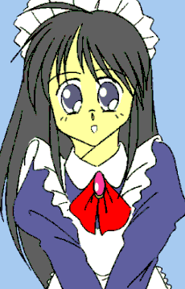

「違うって……何が？」
怪訝な表情で沙紀が尋ね返してくる。
しまった……つい女の名前を否定してしまったが、それだとオレが雇い主の『旦那さま』であることを説明しなければならない。
けど、そんなことした日には、この女は窒息するまで笑い倒すに決まっている。
こんな体にされた上に、笑われるのは耐えられん。ならば……
「え〜っと、な、名前です。あたしの名前……」
女をやって６時間程度のオレだが、『あたし』をすんなり言うことができた。まるで子供のころから使っていたみたいに。
不思議だったが今はそれを考えている場面ではない。
「名前？ そういえば『山村ありさ』ってさ……」
「ごめんなさい、間違えました。『ありさ』はあたしのお姉ちゃんでしたぁ」
「だろ？ どこかで聞いた名前だと思ったんだよなぁ」
ナイスフォロー。真彩香……というか、それでその名前が出てきたのか。
それにしても『本当の名前』をどうしよう。ありさと似た名前……ありし……ありす……ありせ…………ありす……ありすか。
「本当の名前は、山村ありすです」
でまかせにしても、もうちょっとかわいくない名前は思いつかなかったものか。パステルピンクのフリルまみれな服着ているイメージだぞ……
「ありす……ありすか。可愛い名前だなぁ」
どうやら正体は隠せたようだ。
もっとも「仮に」の話しだが、もしも……もしもこのまま姿が固定されたら、オヤジや兄貴たちに『ありす』が『オレ』と証明できない危険性の方が高いくらいだ。
何しろ遺伝子情報から書き換えられていると言うからな。
「よっし。ありす、先輩のあたしたちが今日一日みっちり指導してやる」
「は、はい。よろしくお願いします、沙紀先輩」
……なんか時間に比例して女性化が精神にまで及んでないか？ 段々少女をしているのに違和感がなくなってきた……自分が恐ろしい……
「んじゃまずは掃除だね。埃を落としてモップがけ」
「…………」
オレは言葉に詰まった。自分の家をこう言うのもなんだが、『屋敷』である。並大抵の広さではないし、二階だってある。
「ほら、もたもたしない。はじめてはじめて」
「あららー」
沙紀さんが文字通り他人事で言う。
「かわいそうですぅ」
真彩香さんが同情して泣きかけている。そしてあたしは……
「ちょっとありす？ 何を泣いてんのよ？」
ニュースに同情したのか、ぽろぽろと大粒の涙を零していた。
自分の危険も顧みず、子供を助けるために飛び込んだ母親……その気持ちがいたいほど伝わってきてしまった。
あたしは知らずお腹に……そう、子供を宿す場所に手を当てて泣いていた。
やだ……こんなの本当の女の人でもないわよ。たぶん一気に女になったせいで、過剰に敏感になっているのかもしれない。
「……ありす」
沙紀さんがその胸に、あたしの顔を埋めさせてくれた。
「……優しい娘なんだね……いいお母さんになれるよ……」
「沙紀せんぱぁい…」
ダメだわ。今のあたしは完全に心まで女。……もしも今、男の人に口説かれたらＯＫしちゃうかも。

あとがき
いよいよ運命の選択です。選択次第では男に戻りますし、あるいは女で固定されます。その選択は皆様方に委ねられます。
自分のところでも連載してますが、どうも僕は起承転結の『転』でつっかえる傾向があります。
今回も見事に……まぁ別なこともしてましたけどね。自分のサイトの連載とか。
今回はメイド修行。そして女友達としての関係になります。
またこれはＴＳとは関係ないかもしれませんが、『上に立ち指揮をしている男』から『下につき受身になっているメイド』と、立場が正反対なのも面白いかも。
でも今回はあまりコメディ色が出なかったかな……
お読みいただきありがとうございます。
投票の結果○で進行